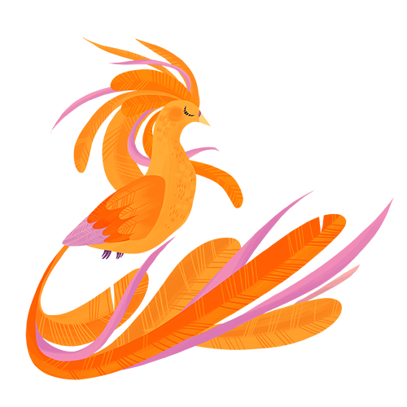

2020 a 2021
Návrh limitované edice hedvábných šátků pro kolekci luxusní značky Silky Gang a návrh firemních šátků pro ČD Cargo.
Kompozice bylo nutné přizpůsobit specifické technologii tisku a praktickému nošení a skládání šátků, formát a paleta
byly předem dané. Zadáním šátku pro kolekci byla česká pohádka Pták Ohnivák, vycházelo se z ilustrativních prvků stromu,
zlatého jablka a rajek s dlouhými, zlatými pery. Kruhová kompozice připomíná korunu stromu, v níž se ukrývá několik
Ohniváků střežících zlatá jablka. Pragmatičtěji laděné šátky pro ČD Cargo na sobě nesou odkazy na artikly importu a exportu,
výrazným prvkem jsou kruhy tvořené černobílými logy, které připomínají koleje. Součástí spolupráce byly i tři katalogové
návrhy firemních šátků.
Oficiální web Silky Gang / Pták Ohnivák / E-shop
Designs for a limited edition of silk scarves of the luxury brand Silky Gang and design of presentational scarves for
the company ČD Cargo. The compositions we adjusted to the very specific print technology as well as the practical use
of scarves, the format and colour palette were predetermined. The theme for the collection scarf was the czech fairytale
Pták Ohnivák/Firebird, so the elements of a tree, golden apples and birds of paradise with long golden feathers are present.
The circular composition resembles a tree crown in which several Firebirds hide, guarding their golden apples. A more
pragmatical design for ČD Cargo shows hints of the company’s often transported items. A distinct element are the circles
made of the company’s logo which resemble the railway. Part of the collaboration was a set of three catalogue company scarves.
Official Silky Gang web / The Firebird / E-shop